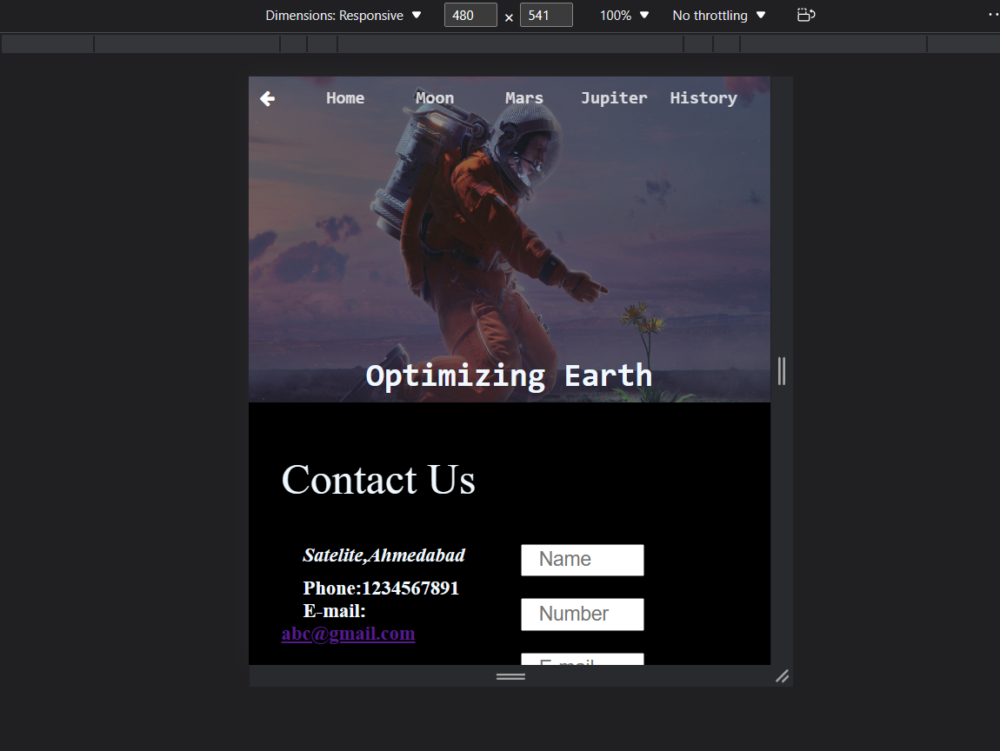
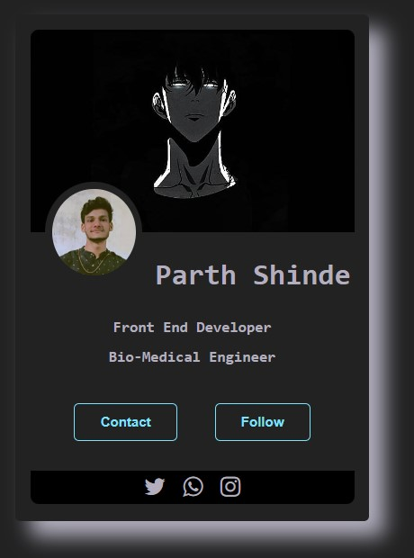
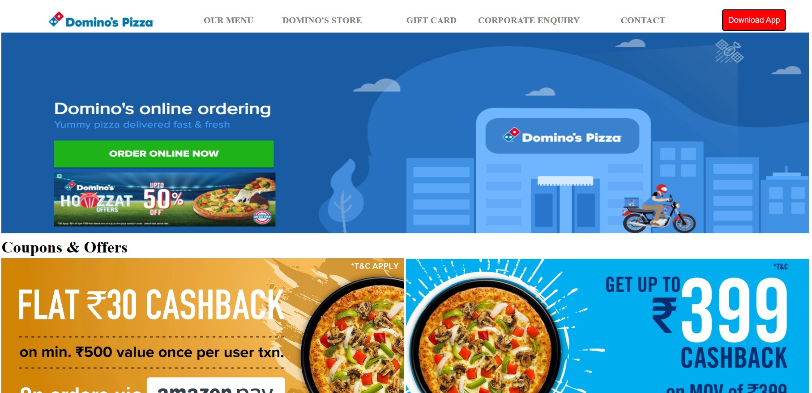

Responsive Website

Space.com
I'have made this responsive website during my practices of CSS and HTML. Also I was new to mediaquery concept. I have some interest in astrology so i have put some concept about the space.
- My Preferences of coding for this project
- ✅ HTML
- ✅ CSS
CSS Layout
BakinGood
I'have made this Layout website during my practices of CSS and HTML. My idea of making BakinGood was to get used to with css styling hovering methods and filtering methods. and also my sister force me to make her website.
- My Preferences of coding for this project
- ✅ HTML
- ✅ CSS

CSS Profile Cards

My profile card
I'have made this Profilecards during my practices of CSS and HTML. I remember i have learned some new concepts in CSS about Positioning.
- My Preferences of coding for this project
- ✅ HTML
- ✅ CSS
HTML Layout
Dominos
I'have made this responsive website during my practices of HTML. I have made this whole project using Table method. HAHA at that i'm not aware of div and grid methods.
- My Preferences of coding for this project
- ✅ HTML
- ✅ Dominos Websites for assets
